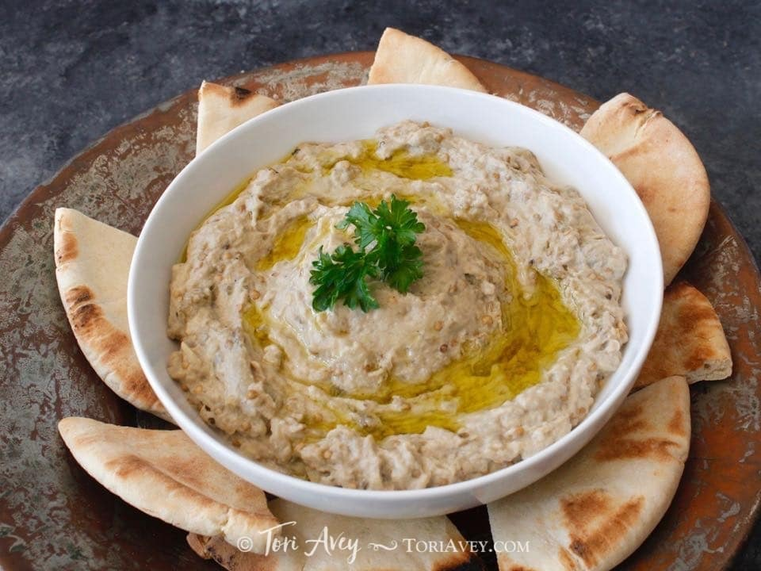

Main Menu
Baba Ganoush

Baba ghanoush is healthy, gluten free, vegan, all natural and so delicious. Pair with pita bread, crackers or chips for a mouth-watering appetizer that your guests will love.
Ingredients
- 2 medium eggplants (about 3 lbs. total), roasted
- 1/3 cup tahini from light seeds, not "dark tahini"
- 3 cloves garlic roasted (or 1 raw, crushed)
- 2 whole fresh lemons, juiced or more to taste
- 1/2 teaspoon cumin
- 1/2 teaspoon salt or more to taste
- Pinch cayenne pepper
- Extra virgin olive oil
- Fresh parsley for garnish (optional); you can also top with a sprinkle of paprika or smoked paprika
Preparation
- Roast the eggplant. You will find that roasting over an open flame will produce richer smoky flavor.Place the roasted eggplant pulp into a bowl with half of the smoky cooking liquid. Discard the skin and reserve the remaining cooking liquid. Let the eggplant return to room temperature.
- Add tahini, garlic, fresh lemon juice, cumin, salt, cayenne pepper and 1 tbsp extra virgin olive oil to the bowl. Use a fork and/or spoon to mash together the mixture, using firm pressure to break up the tahini paste, roasted garlic, and any stringiness of the eggplant. Mix until well combined. Note- I don't recommend using a food processor here, the texture is most authentic when using a fork to mash.
Taste the dip. Add additional tahini, lemon juice, salt or cayenne pepper, if desired. The cayenne is extremely spicy, so add with care.
- Drizzle with olive oil, if desired - just a small amount will do. Garnish with fresh parsley, if desired. Serve as a dip with pita bread, crackers or chips. If you prefer a cold dip, chill in the refrigerator prior to garnish. Store refrigerated in an airtight container.
Main Menu